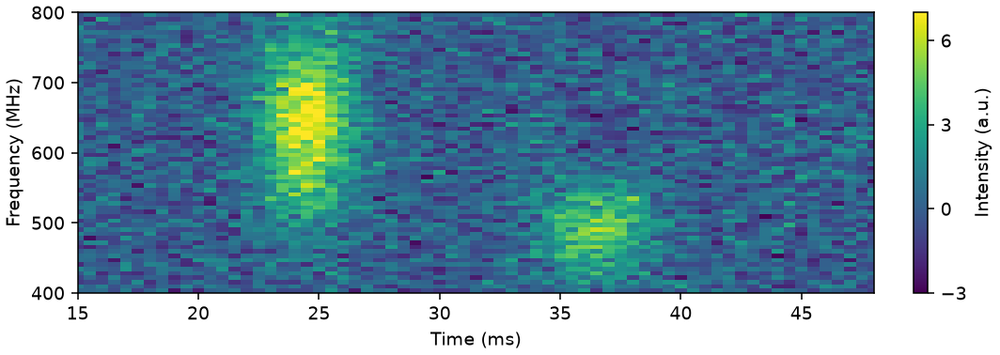
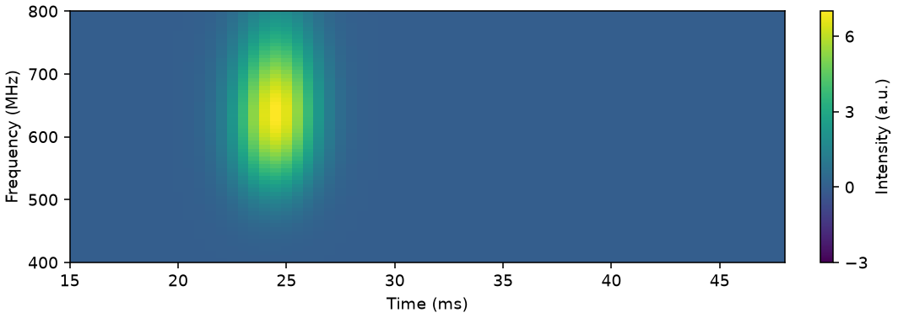
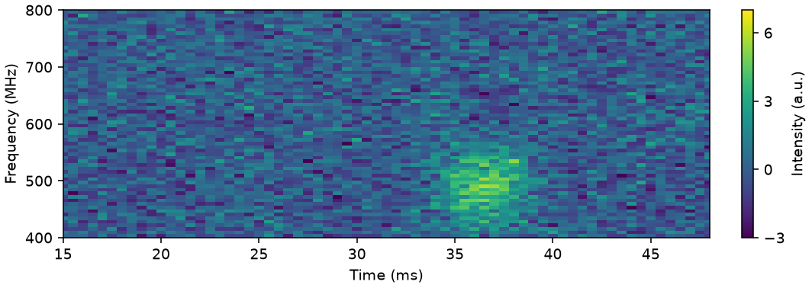
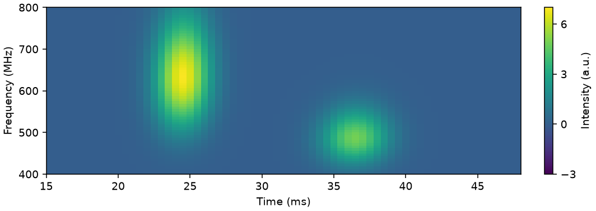
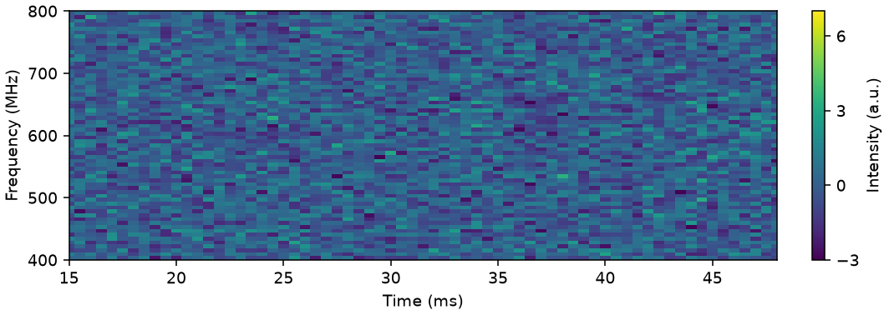

Two-pulse example
The initial search found both peaks, one in the full band and one in the lower half. Compare the trial models and their residuals on the same intensity scale.





The initial search found both peaks, one in the full band and one in the lower half. Compare the trial models and their residuals on the same intensity scale.




